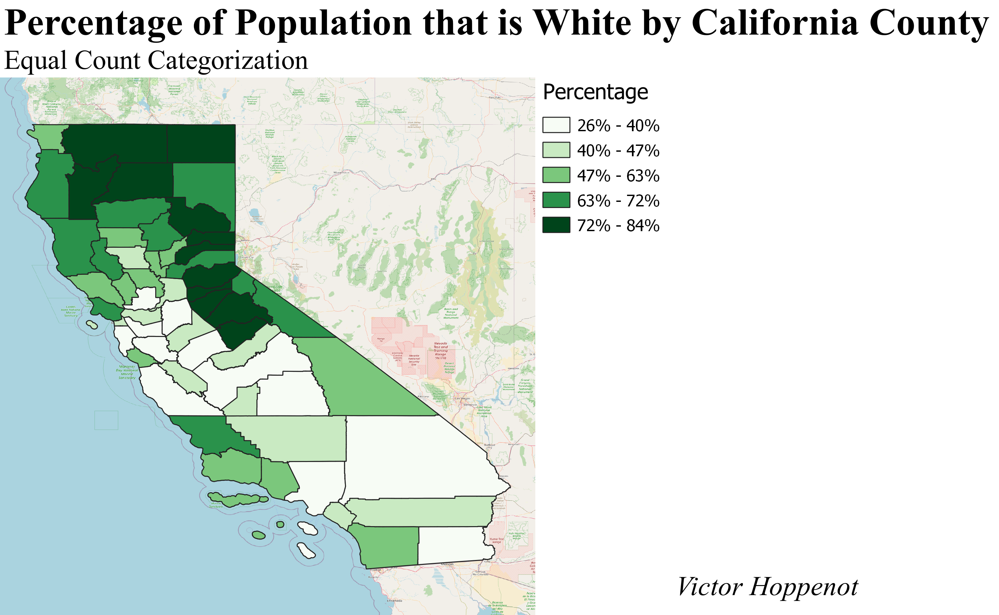
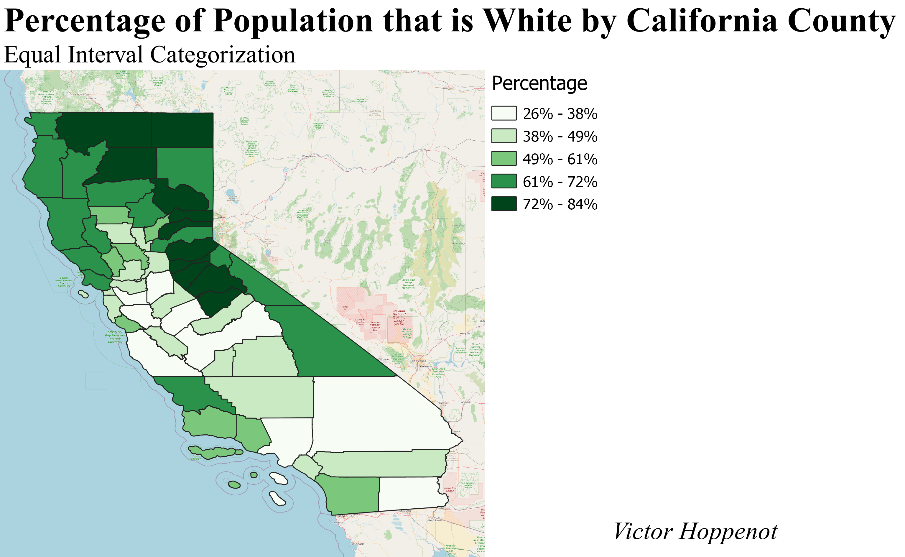
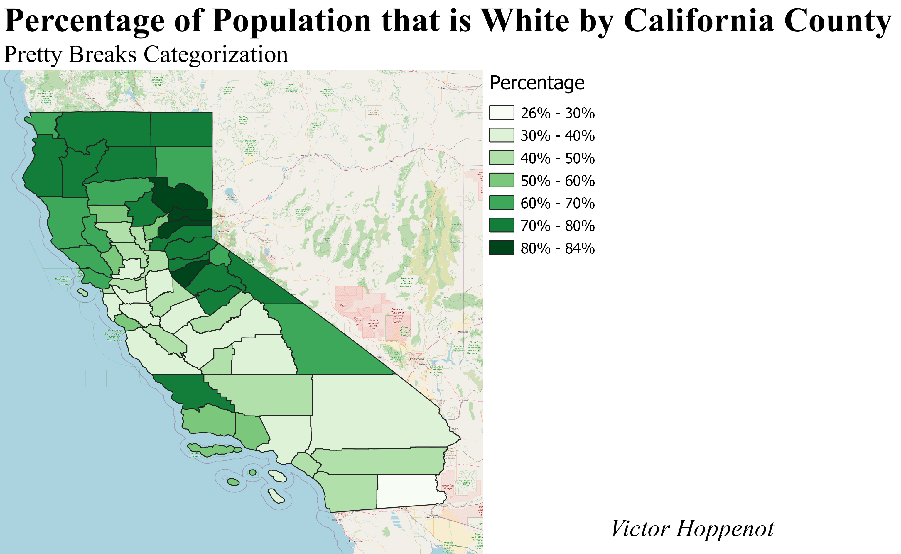

The dataset here represents a ratio between the number of white people in each California county and the total number of people in each California county. This ratio was calculated by dividing the total number of white people by the total number of people in each county.
The Equal Count categorization scheme is used here. This means that every color has the same amount of counties associated with it. This scheme shows the data in quantiles rather than intervals. This means that the data is grouped into groups of equal size. This scheme is useful for showing the data in a way that is easy to understand and compare.
The Equal Interval categorization scheme is used here. This means that every color has the same sized interval of values associated with it. This scheme provides the viewer an intuitive sense of the data by setting it such that the intervals are the same size. Therefore, when a color changes, the value changes the same amount.
The Pretty Breaks categorization scheme is used here. This means that the intervals are chosen to be as even as possible. In this case, that requires such that there are more than 5 colors like in the other two schemes. This scheme makes it easier for people to understand the data by grouping in values that people are familliar with.